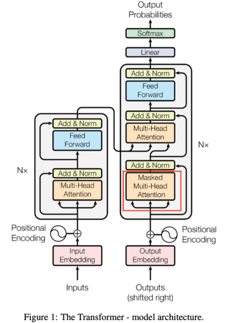
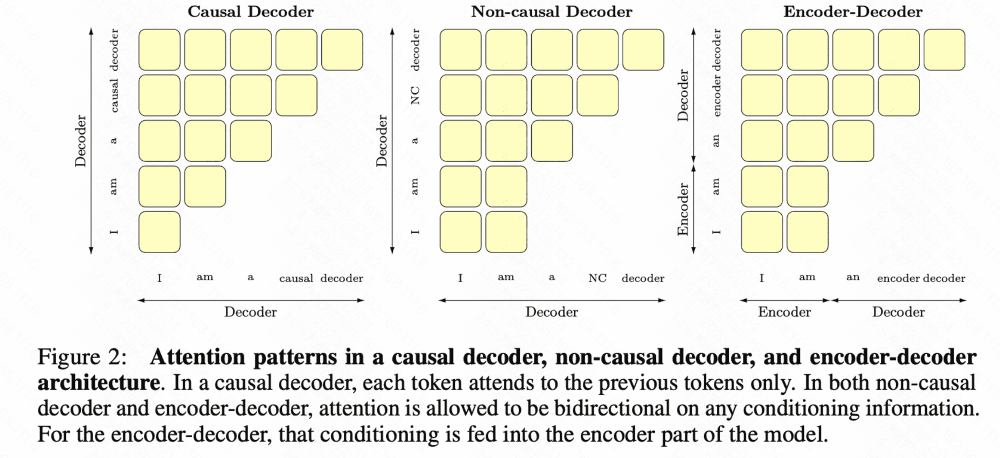

Mask掩码¶

Transformer的Decoder端的Masked MHA中的mask指的是什么技术？区分GPT和Bert区别的关键
Mask(掩码)用于MHA机制计算中屏蔽掉不可见部分，防止模型能“借鉴”未来的信息，既能在训练时应用，也能在inference时候用。
Mask的意义¶
- 限制信息泄露：如果模型能访问未来的token，会造成信息泄露，使得预测或训练不准确。通过mask，可以屏蔽掉未来时刻的词。
- 避免无关位置：batch中不同长度序列，常需使用Padding来对齐输入长度。但是Padding位置 实际上并不包含有效信息，为了避免注意力计算中干扰模型，就用到mask将Padding位置屏蔽。
- 训练目标需要：例如在BERT，引入“遮挡语言模型”的任务，需要将输入序列中部分token用[MASK]或随机token替换 ，并让模型进行“完形填空”。需要mask机制
Mask的作用原理¶
Transformer核心是MHA，基础单元是自注意力机制，对于给定的query,key和value，计算公式如下：
其中：
- Q,维度（batch_size,seq_len,d_k）
- K,维度（batch_size,seq_len,d_k）
- V,维度（batch_size,seq_len,d_v）
- M是Mask矩阵,形状与\(QK^T\)的注意力得分矩阵相同(batch_size,num_heads,seq_len)
M矩阵的作用
- 对于需要屏蔽的位置，\(M_{ij}=-\infty\),经过softmax后，输出的概率趋近于0
- 对于需要保留的位置，\(M_{ij}=0\)，经过softmax后，输出原概率
Mask的分类¶

- Padding Mask
- Casual Mask
- MLM(Masked Language Model) Mask
- 其它自定义Mask(Span Mask,Permutation Mask)
Padding Mask¶
在进行批量训练时，为了将序列长度对齐，我们需要进行Padding操作（一般为0或特殊位置），而Mask的作用就是将多余的位置屏蔽，
计算方式：
- 假设有效长度为L,其余位置为Padding，如果下标为j的位置是Padding，那么将\(M_{ij}=-\infty\)
- 构造QK注意力得分表后，根据序列长度或者是否为Padding值,进行mask
适用位置：
- Encoder self-attention:在处理输入序列时，要屏蔽所有Padding
- Decoder self-attention:处理目标序列，也需要屏蔽Padding
- Cross-Attention:若源序列有Padding，也需要屏蔽
Casual Mask¶
Decoder进行解码时，不能访问未来的序列信息，确保预测是自回归、符合因果规律的顺序
计算方式：
- Casual Mask一般是一个上三角矩阵（或下三角）的形式。例如，对长度L的序列而言，有下标（i,j）表示，在位置i处的token是否能看到位置j处的token.
如果j>i,\(M_{ij}=-\infty\);如果j\(\leq\)i,\(M_{ij}=0\)
适用位置：
- 解码器自注意力：在Decoder中使用mask,保证序列第i个位置，无法看到第i+1,i+2个位置
MLM Mask¶
- 在 BERT、RoBERTa 等模型的预训练过程中，需要随机遮挡一部分输入 token（例如 15%），并让模型去预测被遮挡的 token。这时就需要一个 Mask 来指示哪些位置是真正被“masked out”的，模型需要在预测时关注它们的上下文，但在计算注意力分数时可做特殊处理。
具体做法：
- 在输入序列中替换：将一部分 token 用
[MASK]或随机词替换。 - Mask 矩阵：在注意力机制中，通常并不会完全屏蔽被
[MASK]的位置，因为它需要从其他位置获取信息。但有时为了避免模型“看到自己”，可能需要一定的自注意力屏蔽策略。 - 损失计算：只对被
[MASK]的位置计算预测损失，其余位置不会贡献损失。
变体：
- 整段 Mask（Span Mask）：如在 BART 中，对连续若干 token 做 span masking，并用一个特殊 token 来替代整个 span，模型需要学习如何完整恢复 span 内容。
- Permuted Language Modeling（XLNet）：引入了一种不同的 Mask 顺序，通过随机排列的方式来学习依赖关系。
其他自定义 Mask¶
Transformer 模型在各个领域衍生出许多变体，也带来了不同的 Mask 机制。例如：
-
Span Mask：在序列中抽取一个连续的片段全部 mask，用在生成模型中使其学会填充缺失片段。
-
Permutation Mask：在 XLNet 中，通过重新排列序列并对某些位置进行屏蔽，引导模型学习双向上下文。
-
Cross-Modal Mask：在多模态学习中（图像+文本、语音+文本等），需要屏蔽不同模态之间无效的对齐或额外的空白帧等。
-
Segment Mask：在句子对（或段落对）任务中，引入 segment embedding 并可结合 Mask 控制跨段落的注意力范围。
-
可学习的 Mask：在少数前沿研究中，引入可学习的 Mask 参数，以便模型自行学习何时屏蔽哪些位置。
Mask实现细节¶
1.Shape对齐：将Mask矩阵的形状与注意力分数矩阵一样，或者将Mask进行广播后，形状对齐
2.数值填充：在需要屏蔽的位置设置设置一个非常大的负数，使得进行softmax操作后，注意力权重接近于0.
3.何时添加Mask:在计算注意力分数（\(\frac{QK^T}{\sqrt{d_k}}\)）后，进行Mask,最后做Softmax。
4.高效实现：
有些时候会构造通用的Padding Mask，再与Casual Mask做逻辑或的操作，合并到同一个Mask矩阵，减少重复计算。¶
合并 Padding Mask 和 Casual Mask：
然后这个 attn_mask 就会被应用到 attention score 上：
我们把两个 mask 做 逻辑或操作 ，合并成一个 mask 矩阵，这样在 attention 计算时只需应用一次。
这样做的好处：
避免分别应用多个 mask，提高效率。更容易在 GPU 上并行处理。
为了提高计算速度：会在GPU上一次性构造好Mask矩阵，并于分数矩阵并行计算¶
为什么要在 GPU 上构造 Mask？
- 构造 mask 是个规则性操作（比如上三角、padding 标记），非常适合 GPU 并行计算。
- 如果先在 CPU 上构造好再传到 GPU，会有额外的数据传输开销。
- 所以很多框架（如 PyTorch Transformers）直接在 GPU 上构造 mask。
什么叫“和分数矩阵并行计算”？
在 Transformer 的 Attention 层中，一般流程如下：
如果我们在 GPU 上预先准备好 mask，并直接应用在 score 矩阵上，就可以：
- 减少数据搬运
- 利用 GPU 并行加速 mask 应用过程
- 避免多次 mask 操作（如分开 apply padding 和 causal）
| 步骤 | 描述 | 是否推荐 |
|---|---|---|
| 分别构造 padding mask 和 casual mask | 可读性强 | ❌ 不高效 |
| 合并 mask 成一个矩阵 | 提高计算效率 | ✅ 推荐 |
| 在 CPU 上构造 mask 再传给 GPU | 易实现 | ❌ 有性能损耗 |
| 在 GPU 上构造 mask | 更高效 | ✅ 推荐 |
| 分步 apply 多个 mask | 容易理解 | ❌ 多次运算 |
| 一次 apply 合并后的 mask | 高效 | ✅ 推荐 |
代码示例：Casual Mask + Padding Mask¶
不同变体中的Mask示例：¶
1. BERT¶
以 15% 概率随机遮挡输入 token，并用 [MASK] 或其他词替换，训练“被遮挡的语言模型”。这是在输入层面“替换”，注意力机制中则不一定强行屏蔽该位置，但会在损失函数只计算被 mask 的 token。
2. GPT 系列¶
使用经典的 Look-Ahead Mask（也叫 causal mask），保证解码时只能看到已生成的词。训练时也保持该特性，以便于自回归预测。
3. BART¶
对输入序列做随机 span masking，用特殊 token [MASK] 替换整段 span；同时输出依然是自回归方式解码，也需要结合 Look-Ahead Mask 进行生成。
4. XLNet¶
使用 Permutation Language Modeling，在预训练阶段打乱 tokens 的顺序，并引入一个自定义的 Mask 机制保证模型不会看到目标 token 的内容，达成类似双向学习的效果。